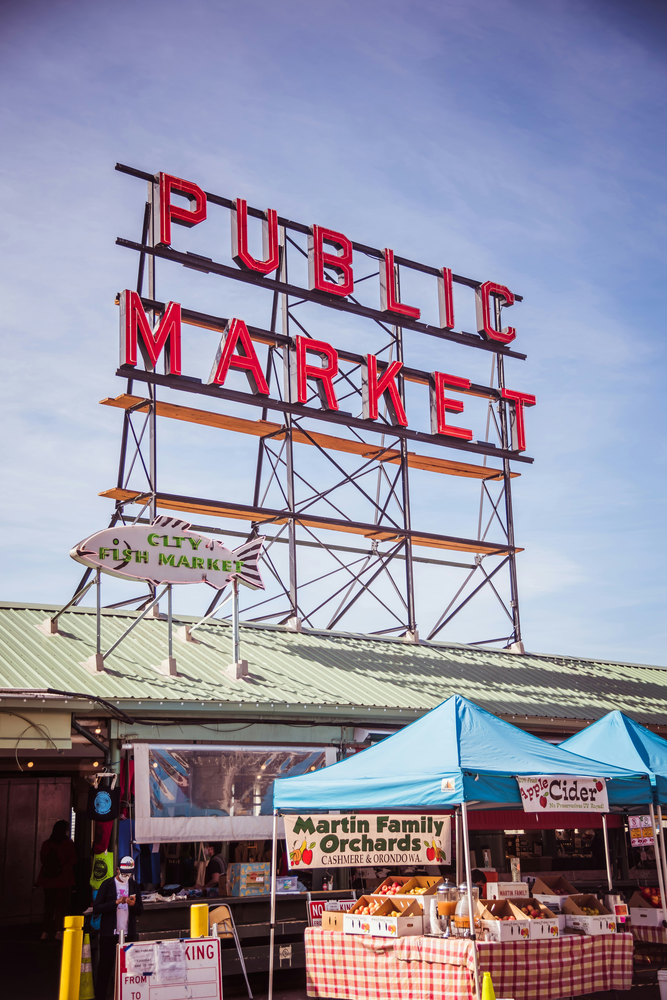

Pike Place Chowder
Seafood · Downtown
Consistently voted best chowder in Seattle, this unassuming counter‑service spot inside Pike Place Market serves creamy New England‑style and smoky seafood chowders. The line snakes out the door, but it moves fast — and it’s worth the wait.
1530 Post Aly, Seattle, WA 98101